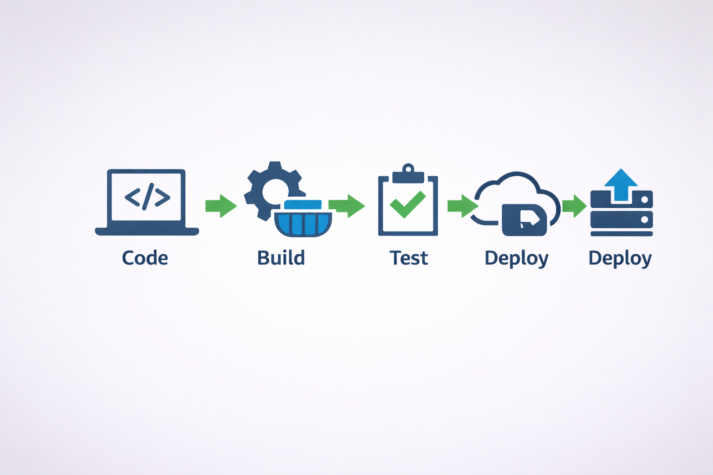

Docker
Plataforma usada para empacotar a aplicação em containers, garantindo consistência e portabilidade entre ambientes.
Projeto Académico • Docker • GitHub Actions • CI/CD
Este projeto demonstra como uma aplicação web simples pode ser integrada numa pipeline automatizada, desde o commit até à criação e publicação de uma imagem Docker.
ComeçarEste projeto foi desenvolvido para demonstrar os conceitos fundamentais de Docker, GitHub Actions, CI/CD, workflows e automação no desenvolvimento de software.

Plataforma usada para empacotar a aplicação em containers, garantindo consistência e portabilidade entre ambientes.
Ferramenta de automação que executa workflows no GitHub com base em eventos como push e pull request.
Registry usado para armazenar e distribuir as imagens Docker geradas pela pipeline.
Automatiza tarefas repetitivas como validação, build e publicação, reduzindo erros humanos.
Garante que cada alteração enviada ao repositório é validada automaticamente.
Prepara automaticamente a aplicação para distribuição ou publicação.
Unidade isolada que contém a aplicação e tudo o que ela precisa para correr.
Ficheiro que define a automação, quando começa e que tarefas executa.
Conjunto de steps executado num runner dentro de um workflow.
Ação individual dentro de um job, como checkout, validação ou build.
Máquina virtual onde os jobs do GitHub Actions são executados.
O processo automatizado segue uma sequência lógica desde a alteração no código até à publicação da imagem no registry.
O utilizador envia alterações para o repositório.
O evento push ativa a pipeline automaticamente.
A mensagem do commit é verificada segundo a regra definida.
A imagem Docker é construída a partir do Dockerfile.
A imagem é publicada no GitHub Container Registry.
O Docker ajuda a garantir que a aplicação corre da mesma forma em qualquer ambiente.
Cada execução da pipeline fica registada, facilitando controlo e auditoria.
O processo fica mais rápido e organizado graças à automação de tarefas.
A validação automática impede que certas alterações avancem sem controlo.